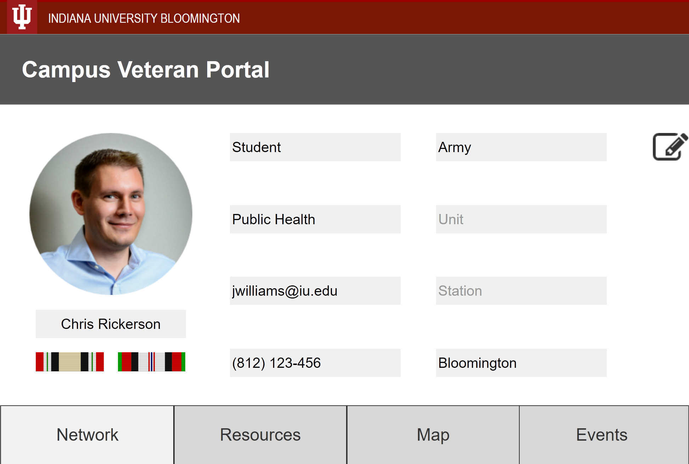
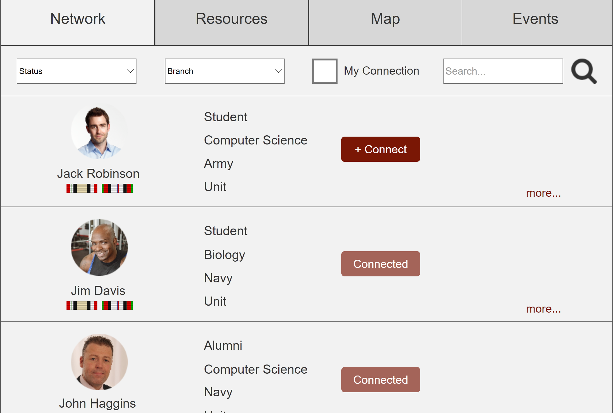
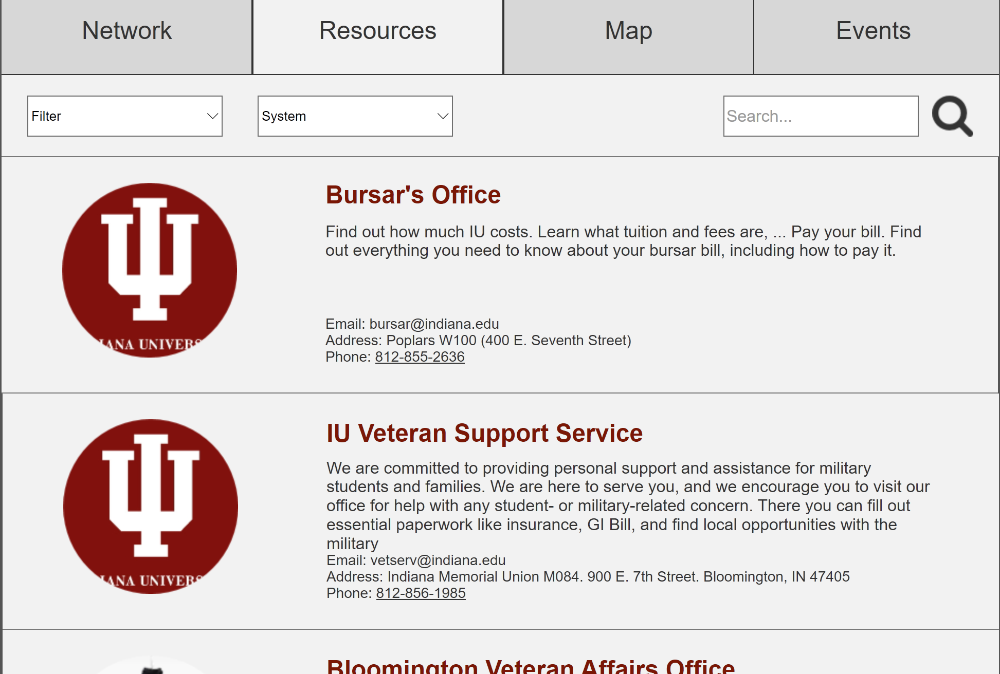
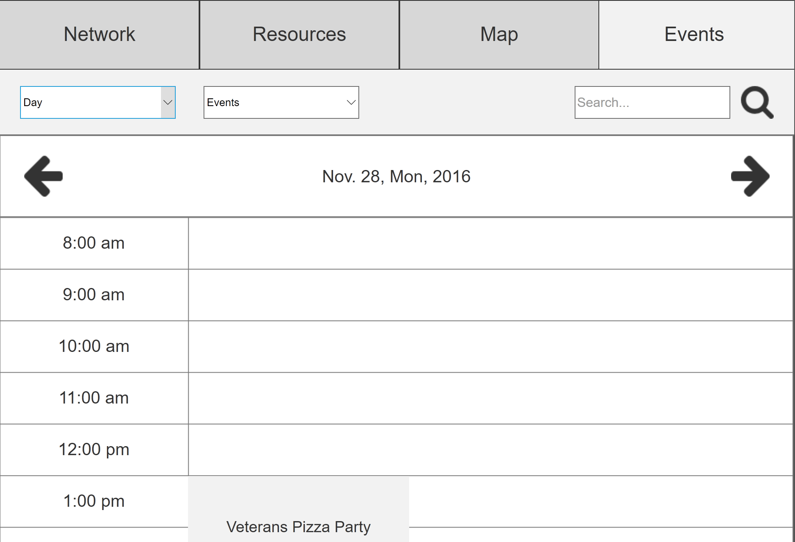

Website Benchmarking, Survey, Cardsorting, Wireframing
Role
Background
Problem
The old website of the Department of Library & Information Science at NTU was built several years ago, and users had been having problems with finding relevent information.
Needs Analysis
To better understand what was causing the problem for the users and what are the user needs, we conducted a series of interview with the department director and the staff managing the website.
We also sent out surveys to 64 undergraduate students in the department.
Interview
Survey
Insight from Benchmarking
Cardsorting
Sitemap
Wireframes
Below is our solution, Campus Veterans Portal, a centralized portal with information specifically for student veterans, with the veteran's profile showing on the top, and below are the four sections: Network, Resources, Map, and Events.
1: Profile

The profile gives veterans the opportunity to identify themselves with school and military related information. It will be connected with the university's system, showing one's basic information and veteran-specific information. The veterans would have control over what information they would like to make public to other veterans on campus.
2: Network

Network provides veterans the opportunity to connect with other veterans on campus and they can filter to find other veterans that served in the same branch as well as veterans who are faculty, alumni, and students.
3: Resources

Resources contains veteran specific information and all of the info provided is directed at the veterans. This section is designed in reponse of the problem that the veterans may not aware of the what or how they can access the resources and benefits provided at the local, regional, and national level.
4: Map

It was mentioned by the director of VSS that knowing about military related locations helps provide connections between the university, the veterans, and their military background. Besides, when a veteran is new to a campus, he/she may not know exactly where everything is. This Map section would serve as an aid to the Resources section that provide veteran-specific location information.
5: Events

Events is where it takes the network a step forward to connect veterans with opportunities they might not be aware of otherwise. It connects with the Network, and the veteran can see who is going to the events from the connections that was made.